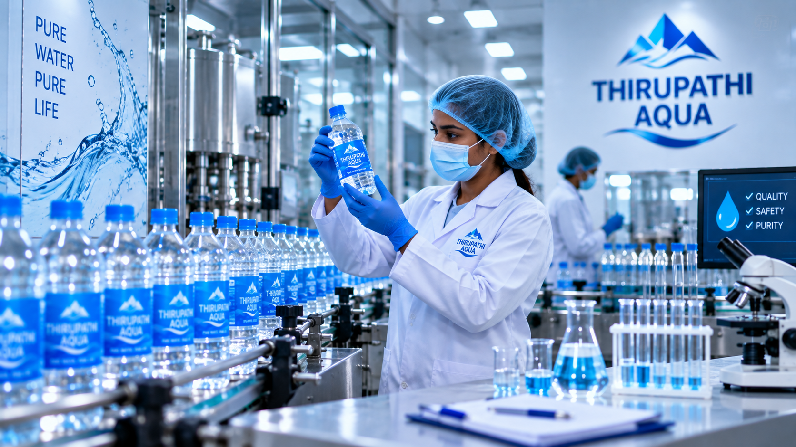
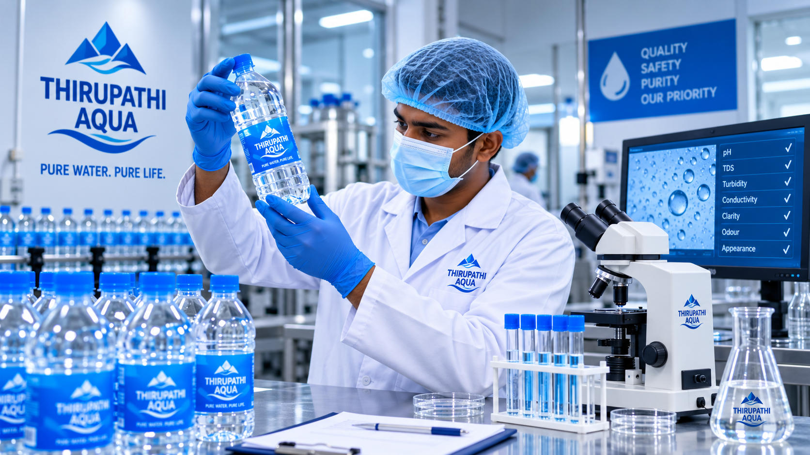
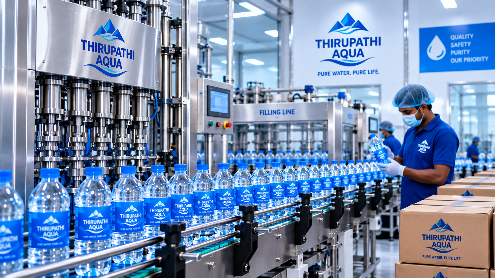

Clean Production
A carefully managed production environment designed around organized workflow and clean handling.
PURE WATER. PURE LIFE.

Careful processes, clean handling and consistent attention throughout the journey of every bottle.
THIRUPATHI AQUA follows an organized production approach focused on cleanliness, careful handling and consistent attention throughout the water journey.
From purification and filling to capping, labelling and packaging, each stage is managed to support dependable everyday refreshment.
A carefully managed production environment designed around organized workflow and clean handling.
Key production stages are managed with attention to consistency and smooth process flow.
Bottles are filled, capped, labelled and prepared through an organized production process.
A consistent approach designed to support refreshing packaged drinking water for everyday use.

Throughout production, each stage is approached with attention to clean handling, bottle presentation and organized workflow.
Structured movement throughout the production process.
Finished bottles are handled with attention to presentation.
Bottles are prepared through a managed production workflow.

From bottle filling to final preparation, the production environment is structured around controlled movement and organized handling.
Bottles progress through dedicated production stages.
Production follows an organized journey from filling to packing.
Finished bottles are prepared for packing and distribution.
Our focus is on organized production, clean handling and consistent attention throughout the journey of THIRUPATHI AQUA packaged drinking water.
Contact Us →